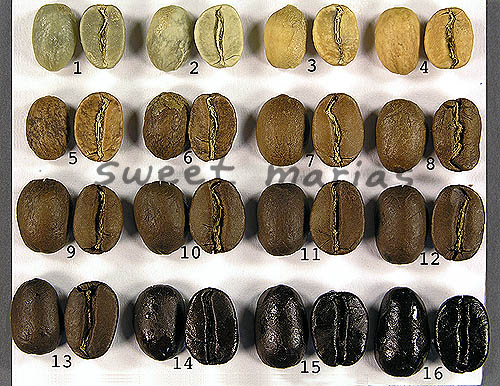

Roast those beans!
To be enjoyed, coffee goes through a roasting process.
Without it, the beverage would be very grassy and unappealing.
Without it, the beverage would be very grassy and unappealing.
The roasting process begins with 'green' coffee. The coffee is added to a roaster, of which there
are many different types and methods, this is a subject for another website. Hot air is cycled through
a closed enviroment. The beans absorb heat and begin to roast.

drying (1-4)
0-300f
coffee is slowly warmed over a peroid of around 4 minutes this allows the coffee to evaporate excess moisture, preparing it to roast.
0-300f
coffee is slowly warmed over a peroid of around 4 minutes this allows the coffee to evaporate excess moisture, preparing it to roast.
ramp (5-6)
300-400f
at this point the coffee begins to change colors to the typical brown emmiting roasty smells
300-400f
at this point the coffee begins to change colors to the typical brown emmiting roasty smells
first crack (7-9)
400-415f
the beans have absorbed enough energy that the remaining moisture actually breaks cell walls creating an audible 'crack' very similar to popcorn. at any point after this, the coffee is considered roasted and drinkable
400-415f
the beans have absorbed enough energy that the remaining moisture actually breaks cell walls creating an audible 'crack' very similar to popcorn. at any point after this, the coffee is considered roasted and drinkable
second crack (12-13)
445f
during and after first crack the beans are caramelizing and sugar compounds are changing rapidly. the inherent flavor of the coffees 'terrior' can easily be decimated. second crack signals the beginings of 'dark' roast territory.
445f
during and after first crack the beans are caramelizing and sugar compounds are changing rapidly. the inherent flavor of the coffees 'terrior' can easily be decimated. second crack signals the beginings of 'dark' roast territory.